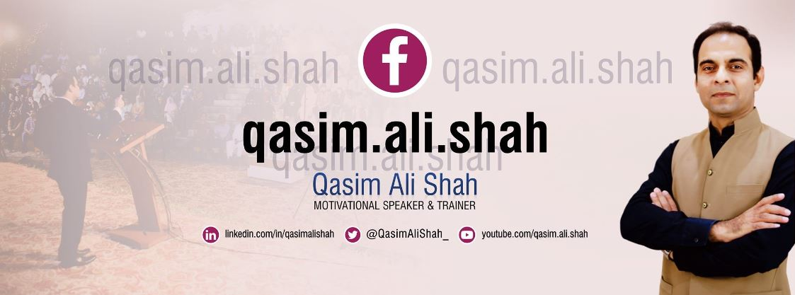

.
Qasim Ali Shah is known as one of Pakistan’s finest intellectuals. He is a lauded motivational speaker, a writer and an educationalist in the country. Known as one of the best debaters and orators, Qasim Ali Shah has phenomenal addressing abilities. Qasim Ali Shah is further renowned for his critical thinking, hazard management, methodology, knowledge, self-awareness and other attributes such as vocation arrangement and work ethic.
Qasim Ali Shah has over 500 recorded videos on Youtube and other such websites. In these videos, the man of the hour addresses social issues and how one can become a better human. Furthermore, Qasim runs a host of educational and instructional courses for amateurs who want to excel in different fields.
Considered as one of the top 12 entrepreneurs in Pakistan, Qasim Ali Shah started his career as an officer in Pakistan’s administration. His administrative expertise forced him to turn into a mentor and coach for others. Qasim then went on to become an essayist, columnist, and a valuable speaker. Apart from this, Qasim Ali Shah runs his own institute in Lahore as well. Being the author of 12 influential books, Qasim’s projects range from radio to television as well.
Born on December 25, 1980, in Punjab’s District Gujrat, Qasim Ali Shah’s family moved to Lahore when he was little. Since childhood, Qasim was attracted to reading and collecting books. In his school life, he was very active in debating competitions and other positive rivalries. Qasim showed his bright attitude by acing much of his primary and high school. Today, he teaches everything he learned in the process in his academy in Gulshan-e-Ravi, Lahore, called Qasim Ali Shah academy.
Doing his F.Sc. from Government Islamia College, Civil Lines Lahore, Qasim always worked towards excellence. For his University, he went to the University of Engineering and Technology (UET) where he earned his bachelor’s degree. Many recall that Qasim Ali Shah was one of the faculty’s most favorite students – adored and cherished by the teachers.
Once he was done with his designing degree, Qasim prepared for the country’s toughest exam, of the Central Superior Services (CSS). He passed the exam with flying colors and joined the Pakistan Administrative Services (PAS), previously known as DMG. However, Qasim saw that his temperament did not meet the ‘inept’ measures of administration. Thus, Qasim switched his field to education and became an all-rounder teacher.
Qasim became so good at what he did, that he affiliated himself with the MPDD (Management Proficient Improvement Division) and taught government officers through it. Qasim Ali Shah has also remained in association with the PJI (Punjab Judicial Institute), preparing the staff of High Courts for a better work ethic.
Soon, Shah was so good at what he did, he expanded his horizons and turned into a motivational speaker. Not just that, he became an analyst and a coach too. Serving in the Directorate of Staff, Qasim has taught over 8000 headmasters alone.
Qasim Ali Shah’s presence on the radio is not an unknown fact. He previously facilitated a radio program called Manzil Ka Musafir. The program revolves around hosting professionals from different fields of life who in turn showcase their journeys to success. The show has motivated thousands of people in their concerned work. Apart from radio, Shah has appeared on countless shows and tv channels. From morning shows to analysis on talk shows, Qasim Ali Shah is a widely recognized face when it comes to tv appearances.
As Qasim says, “Books can change your lives forever!”, and rightly so, Shah’s books have changed the lives of many. His books are read by thousands of people throughout the world. Some of his famous books include; Aap Ka Bacha by Kamyab Ho Sakta Hai, Kamyabi Ka Paigham, Zara Num Ho. Most of Shah’s books serve as written versions of motivations and things to do in life. He is an acknowledged writer who continues to publish more and more quality stuff. His book not only teaches children about the world, but some of his work teaches parents how to bring up their children. Click here to see books of Qasim Ali Shah